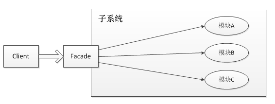
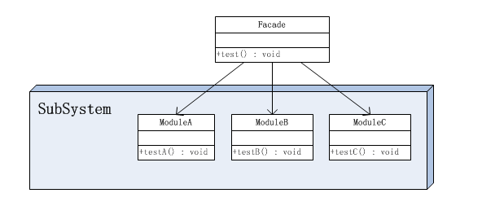
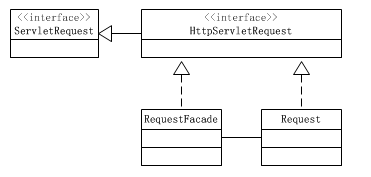
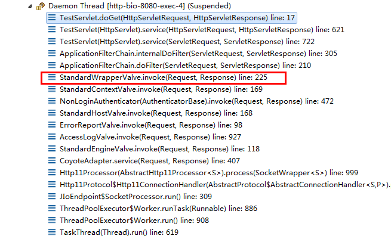

快速学习
类型：结构型
外观模式又称门面模式（Facade）。隐藏了系统的复杂性，并向客户端提供了一个客户端可以访问系统的接口。
外观模式，即Facade，是一个比较简单的模式。它的基本思想如下：
如果客户端要跟许多子系统打交道，那么客户端需要了解各个子系统的接口，比较麻烦。如果有一个统一的“中介”，让客户端只跟中介打交道，中介再去跟各个子系统打交道，对客户端来说就比较简单。所以Facade就相当于搞了一个中介。
我们以注册公司为例，假设注册公司需要三步：
- 向工商局申请公司营业执照；
- 在银行开设账户；
- 在税务局开设纳税号。
以下是三个系统的接口：
|
|
如果子系统比较复杂，并且客户对流程也不熟悉，那就把这些流程全部委托给中介：
|
|
这样，客户端只跟Facade打交道，一次完成公司注册的所有繁琐流程：
|
|
很多Web程序，内部有多个子系统提供服务，经常使用一个统一的Facade入口，例如一个RestApiController，使得外部用户调用的时候，只关心Facade提供的接口，不用管内部到底是哪个子系统处理的。
更复杂的Web程序，会有多个Web服务，这个时候，经常会使用一个统一的网关入口来自动转发到不同的Web服务，这种提供统一入口的网关就是Gateway，它本质上也是一个Facade，但可以附加一些用户认证、限流限速的额外服务。
概述
主要解决：降低访问复杂系统的内部子系统时的复杂度，简化客户端与之的接口。 何时使用：
- 客户端不需要知道系统内部的复杂联系，整个系统只需提供一个"接待员"即可。
- 定义系统的入口。
应用实例：
- 去医院看病，可能要去挂号、门诊、划价、取药，让患者或患者家属觉得很复杂，如果有提供接待人员，只让接待人员来处理，就很方便。
- JAVA 的三层开发模式。
优点：
-
松散耦合 门面模式松散了客户端与子系统的耦合关系，让子系统内部的模块能更容易扩展和维护。
-
简单易用 门面模式让子系统更加易用，客户端不再需要了解子系统内部的实现，也不需要跟众多子系统内部的模块进行交互，只需要跟门面类交互就可以了。
-
更好的划分访问层次 通过合理使用Facade，可以帮助我们更好地划分访问的层次。有些方法是对系统外的，有些方法是系统内部使用的。把需要暴露给外部的功能集中到门面中，这样既方便客户端使用，也很好地隐藏了内部的细节。
缺点： 不符合开闭原则，如果要改东西很麻烦，继承重写都不合适。
使用场景：
- 为复杂的模块或子系统提供外界访问的模块。
- 子系统相对独立。
- 预防低水平人员带来的风险。
一个系统可以有几个门面类： 在门面模式中，通常只需要一个门面类，并且此门面类只有一个实例，换言之它是一个单例类。当然这并不意味着在整个系统里只有一个门面类，而仅仅是说对每一个子系统只有一个门面类。或者说，如果一个系统有好几个子系统的话，每一个子系统都有一个门面类，整个系统可以有数个门面类。
为子系统增加新行为： 初学者往往以为通过继承一个门面类便可在子系统中加入新的行为，这是错误的。门面模式的用意是为子系统提供一个集中化和简化的沟通管道，而不能向子系统加入新的行为。比如医院中的接待员并不是医护人员，接待员并不能为病人提供医疗服务。
门面模式的结构
门面模式没有一个一般化的类图描述，大概结构是这样的： 
由于门面模式的结构图过于抽象，因此把它稍稍具体点。假设子系统内有三个模块，分别是ModuleA、ModuleB和ModuleC，它们分别有一个示例方法，那么此时示例的整体结构图如下： 
在这个对象图中，出现了两个角色：
-
门面(Facade)角色 ： 客户端可以调用这个角色的方法。此角色知晓相关的（一个或者多个）子系统的功能和责任。 在正常情况下，本角色会将所有从客户端发来的请求委派到相应的子系统去。
-
子系统(SubSystem)角色 ： 可以同时有一个或者多个子系统。每个子系统都不是一个单独的类，而是一个类的集合（如上面的子系统就是由ModuleA、ModuleB、ModuleC三个类组合而成）。每个子系统都可以被客户端直接调用，或者被门面角色调用。子系统并不知道门面的存在，对于子系统而言，门面仅仅是另外一个客户端而已。
简单实现
子系统角色中的类：
|
|
门面角色类：
|
|
客户端角色类：
|
|
Facade类其实相当于A、B、C模块的外观界面，有了这个Facade类，那么客户端就不需要亲自调用子系统中的A、B、C模块了，也不需要知道系统内部的实现细节，甚至都不需要知道A、B、C模块的存在，客户端只需要跟Facade类交互就好了，从而更好地实现了客户端和子系统中A、B、C模块的解耦，让客户端更容易地使用系统。
可选择不暴露方法
使用门面模式还有一个附带的好处，就是能够有选择性地暴露方法。一个模块中定义的方法可以分成两部分，一部分是给子系统外部使用的，一部分是子系统内部模块之间相互调用时使用的。有了Facade类，那么用于子系统内部模块之间相互调用的方法就不用暴露给子系统外部了。比如，定义如下A、B、C模块。
|
|
|
|
这样定义一个ModuleFacade类可以有效地屏蔽内部的细节，免得客户端去调用Module类时，发现一些不需要它知道的方法。比如a2()和a3()方法就不需要让客户端知道，否则既暴露了内部的细节，又让客户端迷惑。对客户端来说，他可能还要去思考a2()、a3()方法用来干什么呢？其实a2()和a3()方法是内部模块之间交互的，原本就不是对子系统外部的，所以干脆就不要让客户端知道。
门面模式在Tomcat中的使用
Tomcat中门面模式使用的很多，因为Tomcat中有很多不同组件，每个组件要相互通信，但是又不能将自己内部数据过多的暴露给其他组件。用门面模式隔离数据是个很好的方法。 下面是Request上使用的门面模式： 
使用过Servlet的人都清楚，除了要在web.xml做相应的配置外，还需继承一个叫HttpServlet的抽象类，并且重写doGet与doPost方法（当然只重写service方法也是可以的）。
|
|
可以看出doGet与doPost方法有两个参数，参数类型是接口HttpServletRequest与接口HttpServletResponse，那么从Tomcat中传递过来的真实类型到底是什么呢？通过debug会发现，在真正调用TestServlet类之前，会经过很多Tomcat中的方法。如下图所示

注意红色方框圈中的类，StandardWrapperValue类中的invoke方法225行代码如下：
filterChain.doFilter(request.getRequest(), response.getResponse());
在StandardWrapperValue类中并没有直接将Request对象与Response对象传递给ApplicationFilterChain类的doFilter方法，传递的是RequestFacade与ResponseFacade对象， 为什么这么说呢，看一下request.getRequest()与response.getResponse()方法就真相大白了。
org.apache.catalina.connector.Request
|
|
org.apache.catalina.connector.Response
|
|
可以看到它们返回都是各自的一个门面类，那么这样做有什么好处呢？ Request对象中的很多方法都是内部组件之间相互交互时使用的，比如setComet、setRequestedSessionId等方法（这里就不一一列举了）。这些方法并不对外部公开，但是又必须设置为public，因为还需要跟内部组件之间交互使用。最好的解决方法就是通过使用一个Facade类，将与内部组件之间交互使用的方法屏蔽掉，只提供给外部程序感兴趣的方法。
如果不使用Facade类，直接传递的是Request对象和Response对象，那么熟悉容器内部运作的程序员可以分别把ServletRequest和ServletResponse对象向下转换为Request和Response，并调用它们的公共方法。比如拥有Request对象，就可以调用setComet、setRequestedSessionId等方法，这会危害安全性。